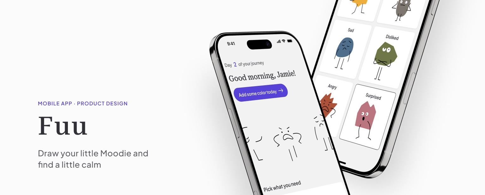
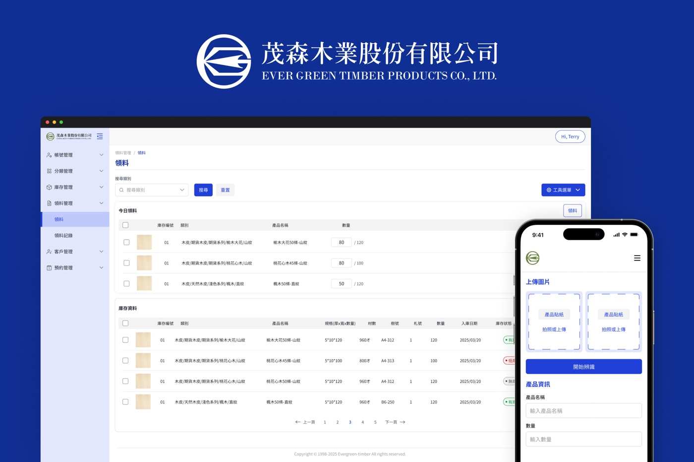
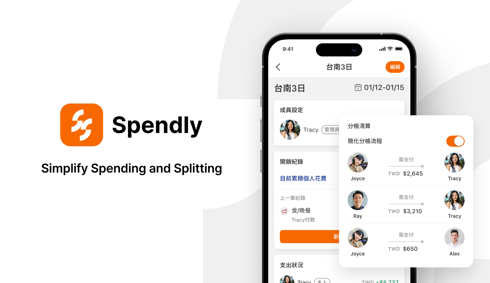
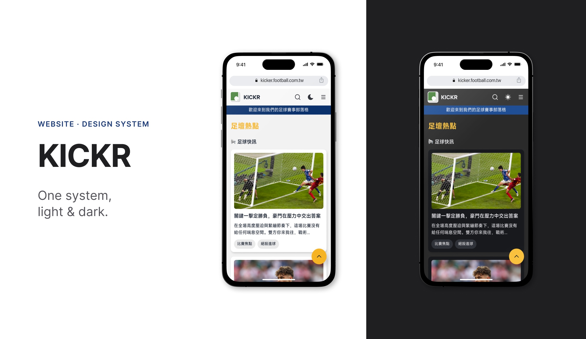

Hello 😄 I’m Tracy.
I’m passionate about design, problem-solving, and exploring how things can work better.
With a background in SaaS and web development, I approach projects with a focus on product thinking, usability, and visual consistency. I enjoy questioning existing approaches, exploring different possibilities, and making thoughtful design decisions.
I also embrace AI as part of my creative and development process, using it to explore ideas, refine solutions, and bring concepts to life more efficiently.
Looking ahead, I’m eager to explore more in mobile app design, particularly in creating thoughtful experiences that connect functionality with everyday user needs.
Fuu
A drawing-based emotional companion app for office workers too tired to take care of themselves

Ever Green Timber
Reshaping a traditional timber business: an inventory system and website, from warehouse intake to showroom

Spendly
An all-in-one app for tracking expenses and splitting bills

Modular Website Design
A football news site built from flexible blocks, with one design system for light and dark mode
